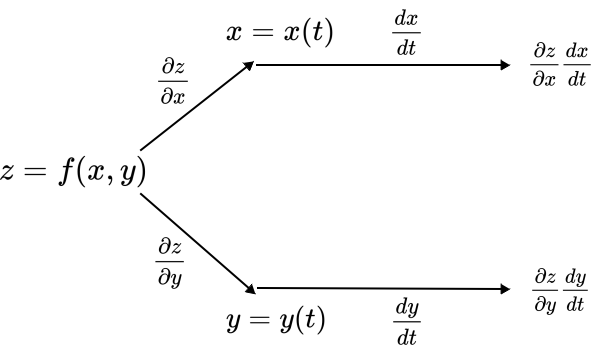
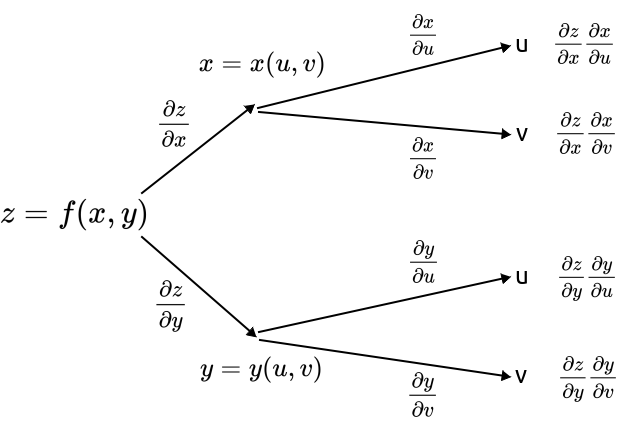

The Chain Rule#
For functions of a single variable the chain rule was a theoretical and calculation tool that in many cases simplified the derivative process. This is also true for functions of several variables. In single variable Calculus you probably memorized the chain rule with the prime notation.
In multivariable Calculus we need to shift to the Leibniz notation,
Chain Rule for One Independent Variable#
Theorem: Chain Rule for One Independent Variable
Given \(z = f(x, y)\) where both \(x = x(t)\) and \(y = y(t)\) are functions of a single variable t, then,
We can visualize this calculation as a tree diagram.

Chain Rule#
Chain Rule for Two Independent Variables#
Theorem: Chain Rule for Two Independent Variables
Given \(z = f(x, y)\) where both \(x = x(u, v)\) and \(y = y(u, v)\) are functions of two variables u and v, then,
and
We can visualize this calculation as a tree diagram. For this diagram, to take the partial with respect to u, follow the u branches and to take the partial with respect to v, follow the v branches.

Chain Rule#
Generalized Chain Rule#
THe chain rule, and its corresponding tree diagram, can easily be generalized to as many variables as we want, both for the main function and for each of its variables.
Theorem: Generalized Chain Rule
Given \(z = f(x_1, x_2, x_3, \ldots, x_n)\) where each \(x_i = x(u_1, u_2, \ldots, u_m)\), then,
To construct the tree diagram for the general situation, there should be n branches off of z, one for each \(x_i\) and each of the \(x_i\) should have m branches off of it, one for each \(u_j.\)
Example: Chain Rule with a CAS#
The chain rule is a nice calculation tool if your expression is broken down into a composition of functions. With a CAS, it does not mind doing the tedious expansions and simplifications. So a CAS can just brute force the intermediate calculations. Nonetheless, it has the generalized chain rule calculations built into it.
CLAE#
As a quick example, input,
f(x(u, v), y(u, v))
This defines f as a function of two variables x and y and each of these are functions of two variables u and v. Now select Calculus > Derivative, input u as the variable and the result will be,
Although it looks more complicated than our expression in the theorem, it is the same.
Implicit Differentiation#
One consequence of the chain rules above is that we can reformulate implicit differentiation to easier and quicker to calculate. To see how this works, say we have \(f(x, y) = 0\), then,
Theorem: Implicit Differentiation of a Function of Two or More Variables
Given an expression \(f(x, y) = 0\) we can find the implicit derivative by,
as long as \(\partial f/\partial y \neq 0.\)
Similarly, if \(f(x, y, z) = 0\) we can find the implicit partial derivatives by,
as long as \(\partial f/\partial z \neq 0.\)